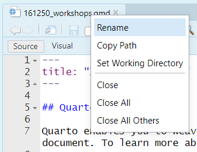

Code
library(tidyverse)It is a good idea to get into the habit of using Quarto projects, rather than just R scripts. Here is a step-by-step guide to creating a project for your workshops. You don’t have to use projects, but they are very useful.
If you haven’t already, make a directory on your computer where you want to keep your code for this course.
Make a new project. Select the “Project” button at the top-right of Rstudio, and select “New Project…”.


The project should now be created, and you’ll likely have an open *.qmd file (something like “161250_workshops.qmd”) in the top-right window of Rstudio. We want to make a *.qmd file for this workshop.

Now you have a document for your Workshop work. You can:
Like so:
There are lots of tutorials online covering the basics of Quarto, and we’ll discuss them during our own workshops. Here are a couple for starters:
https://quarto.org/docs/get-started/hello/rstudio.html
https://www.youtube.com/watch?v=c654j7aQjcg
There are many advantages of Quarto projects. One is that you can put datasets into the project folder, and they’ll be easily accessible within your project, without having to worry about file paths.
You can easily open a recent past projects via the “Projects” button on the top-right of Rstudio.
We will be largely using the tidyverse suite of packages for data organisation, summarising, and plotting; see https://www.tidyverse.org/.
Let’s load that package now:
library(tidyverse)For this workshop we will use some tidyverse built in datasets. Each dataset shows the same values of four variables: country, year, population, and number of documented cases of TB (tuberculosis), but each dataset organizes the values in a different way.
table1# A tibble: 6 × 4
country year cases population
<chr> <dbl> <dbl> <dbl>
1 Afghanistan 1999 745 19987071
2 Afghanistan 2000 2666 20595360
3 Brazil 1999 37737 172006362
4 Brazil 2000 80488 174504898
5 China 1999 212258 1272915272
6 China 2000 213766 1280428583table2# A tibble: 12 × 4
country year type count
<chr> <dbl> <chr> <dbl>
1 Afghanistan 1999 cases 745
2 Afghanistan 1999 population 19987071
3 Afghanistan 2000 cases 2666
4 Afghanistan 2000 population 20595360
5 Brazil 1999 cases 37737
6 Brazil 1999 population 172006362
7 Brazil 2000 cases 80488
8 Brazil 2000 population 174504898
9 China 1999 cases 212258
10 China 1999 population 1272915272
11 China 2000 cases 213766
12 China 2000 population 1280428583table3# A tibble: 6 × 3
country year rate
<chr> <dbl> <chr>
1 Afghanistan 1999 745/19987071
2 Afghanistan 2000 2666/20595360
3 Brazil 1999 37737/172006362
4 Brazil 2000 80488/174504898
5 China 1999 212258/1272915272
6 China 2000 213766/1280428583For each of the sample tables, describe what each observation and each column represents.
Using table1, compute rate of TB cases per 10,000 and the total cases per year
table1 |>
mutate(rate = cases / population * 10000)# A tibble: 6 × 5
country year cases population rate
<chr> <dbl> <dbl> <dbl> <dbl>
1 Afghanistan 1999 745 19987071 0.373
2 Afghanistan 2000 2666 20595360 1.29
3 Brazil 1999 37737 172006362 2.19
4 Brazil 2000 80488 174504898 4.61
5 China 1999 212258 1272915272 1.67
6 China 2000 213766 1280428583 1.67 table1 |>
group_by(year) |>
summarize(total_cases = sum(cases))# A tibble: 2 × 2
year total_cases
<dbl> <dbl>
1 1999 250740
2 2000 296920For table2, write pseudo-code for how you would perform the following actions. Sketch/describe how you would do these. You haven’t yet learned all the functions you’d need to actually perform these operations, but you should still be able to think through the transformations you’d need.
Extract the number of TB cases per country per year.
Extract the matching population per country per year.
Divide cases by population, and multiply by 10000.
Store back in the appropriate place.
We will use the built in dataset on diamond price and measurements. See?diamonds more information.
Outliers are observations that are unusual; data points that don’t seem to fit the pattern. Sometimes outliers are data entry errors, sometimes they are simply values at the extremes that happened to be observed in this data collection, and other times they suggest important new discoveries.
Describe the distribution of the y variable from the diamonds dataset.
ggplot(diamonds, aes(x = y)) +
geom_histogram(binwidth = 0.5)
The only evidence of outliers is the unusually wide limits on the x-axis.
There are so many observations in the common bins that the rare bins are very short, making it very difficult to see them (although maybe if you stare intently at 0 you’ll spot something). We can change the binwidth= to help with this. We can also zoom in on the y axis using coord_cartesian().
ggplot(diamonds, aes(x = y)) +
geom_histogram(binwidth = 0.5) +
coord_cartesian(ylim = c(0, 50)) # also has an xlim() option
Make a new dataset that includes these unusual values using dplyr.
unusual <- diamonds |>
filter(y < 3 | y > 20) |>
select(price, x, y, z) |>
arrange(y)
unusual# A tibble: 9 × 4
price x y z
<int> <dbl> <dbl> <dbl>
1 5139 0 0 0
2 6381 0 0 0
3 12800 0 0 0
4 15686 0 0 0
5 18034 0 0 0
6 2130 0 0 0
7 2130 0 0 0
8 2075 5.15 31.8 5.12
9 12210 8.09 58.9 8.06How many diamonds are 0.99 carat? How many are 1 carat? What do you think is the cause of the difference?
What does na.rm = TRUE do in mean() and sum()?